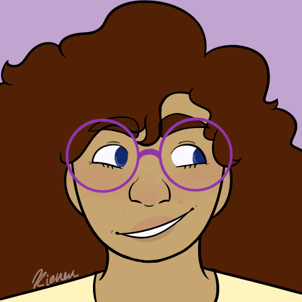
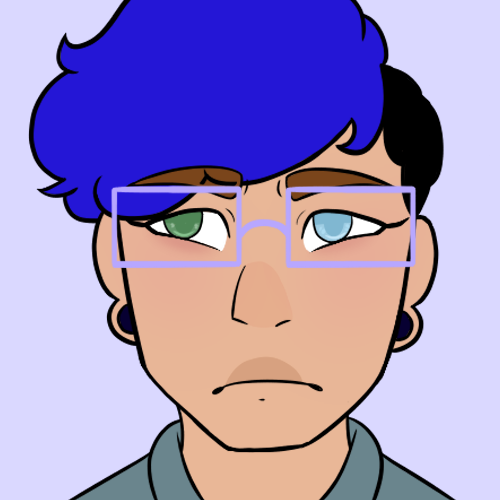

Nya look at my characters

Hypatia Pachis
Pronouns: she/her/hers/herself
Birthday: May 4, 1991
Age (In Story): 22 years old
About: Hypatia is a semi-famous painter from California. She’s very outgoing and loves being out and about with friends.
Hypatia Pachis
Pronouns: she/her/hers/herself
Birthday: May 4, 1991
Age (In Story): 22 years old
About: Hypatia is a semi-famous painter from California. She’s very outgoing and loves being out and about with friends.
Nadzieja de León
Pronouns: the/them/their/themself
Birthday: August 15, 1993
Age (In Story): 20 years old
About: Nadzieja is an aspiring musician from California. They love hanging out with their friends but also enjoys time to themself just as much. They are going to college for music and sound design. They’re Hypatia’s best friend and has been since elementary school.

Jael Hidary
Pronouns: he/him/his/himself
Birthday: May 21, 1992
Age (In Story): 21 years old
About: Jael is a writer from Syria who immigrated to America. He’s very introverted and often doesn’t talk, opting instead to just observe and listen to others. He met Hypatia and Nadzieja in middle school.
Jael Hidary
Pronouns: he/him/his/himself
Birthday: May 21, 1992
Age (In Story): 21 years old
About: Jael is a writer from Syria who immigrated to America. He’s very introverted and often doesn’t talk, opting instead to just observe and listen to others. He met Hypatia and Nadzieja in middle school.
Nikita Kazimir
Pronouns: he/him/his/himself
Birthday: November 30, 1991
Age (In Story): 22 years old
About: Nikita is a chef from Maryland who moved to California. He loves being out and about, especially when he’s with friends. He met Hypatia, Nadzieja, and Jael in high school. He and Jael have been dating since high school.
Jack Tiogair
Pronouns: he/him/his/himself
Birthday: May 24, 2000
Age (In Story): 13 years old
About: Jack is a young ward of Hypatia Pachis. He and his twin brother, Julian Tiogair, met Hypatia through a Big Brother/Big Sister program. She adopted them after a couple years, starting the foundations of the small, unorthodox family. Jack is more withdrawn than his brother, but still pretty extroverted. He loves hanging out with others.
Julian Tiogair
Pronouns: he/him/his/himself
Birthday: May 24, 2000
Age (In Story): 13 years old
About: Twin brother of Jack Tiogair and ward of Hypatia Pachis. Julian is very protective of his brother Jack, the two have been through everything together. Contrary to popular belief, despite Julian looking older, he is the younger of the two twins.